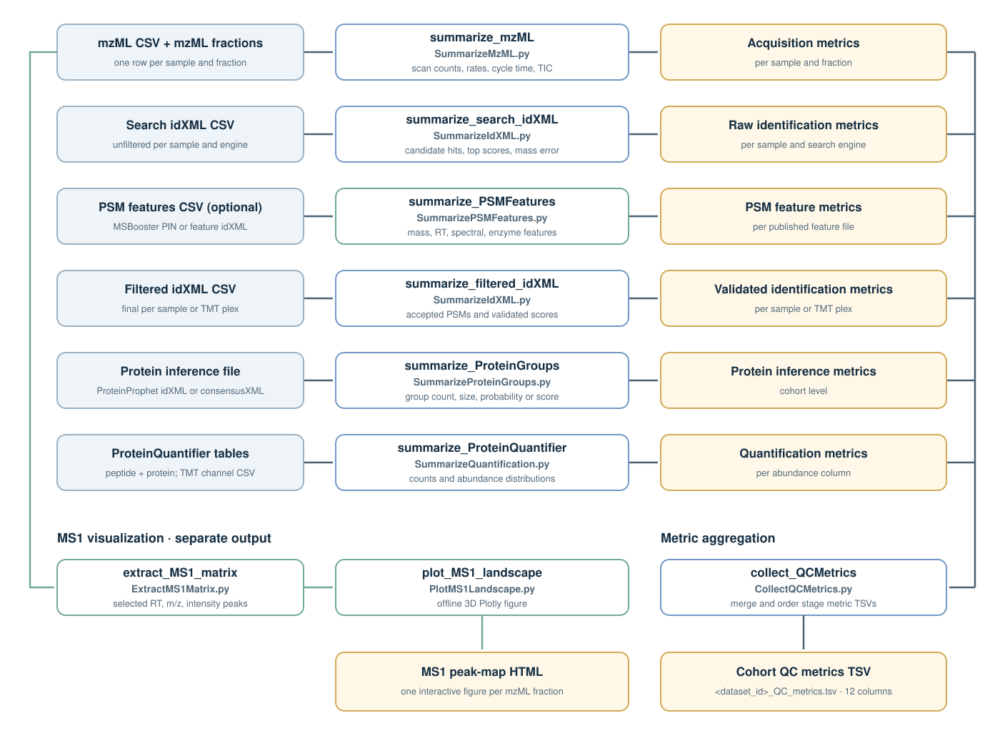

Quality control
The QC pipeline summarizes acquisitions, identifications, protein groups, and abundance tables. Interactive MS1 maps help you inspect acquisition signal alongside those summaries.

Open the original flowchart at full size.

How it works
- Summarize each mzML fraction's scans, timing, and signal, and select peaks for an interactive MS1 map.
- Summarize unfiltered search results, final filtered identifications, and available PSM-feature files.
- Summarize the cohort protein groups used for quantitation.
- Match protein and peptide abundance columns to LFQ samples or TMT plex/channels, then produce a combined metric table.
Inputs and outputs
SpectroMesa-DDA supplies the manifests, inference result, abundance tables, and TMT channel CSV. If search reindexing is enabled, QC uses those same reindexed mzML files. No separate QC input list is needed.
Outputs include <dataset_id>_QC_metrics.tsv, per-stage summaries, and per-fraction *_MS1_landscape.html plots. The results guide explains their locations and the shared 12-column metric schema. QC reports the existing results; it does not change identification thresholds or quantities.
The default pyOpenMS image is 3.5.0, and the MultiQC image supplies Plotly for the offline plots. This pipeline supports Docker and Apptainer profiles.
Resolve ambiguous assay labels
If an abundance header cannot be matched unambiguously, set assay_mapping_csv to a CSV with level,abundance_column,sample_name,fraction_id,reporter_channel,group. level is protein or peptide; abundance_column must exactly match the original table header. Leave fraction_id empty for an assay spanning fractions and use the channel description as group for TMT. The pipeline fails on ambiguous mappings instead of guessing.
Parameter reference
Use the qc_ProteomicDDA block inside params. Defaults below describe this step as launched by SpectroMesa-DDA. “Not set; tool default” means no override is passed. Automatically supplied values do not need to be repeated.
Analysis settings
| Parameter | Type | Default / supplied value | Meaning |
|---|---|---|---|
assay_mapping_csv |
Path | Not set; tool default | Optional explicit level,abundance_column,sample_name,fraction_id,reporter_channel,group mapping |
Software and containers
| Parameter | Type | Default / supplied value | Meaning |
|---|---|---|---|
docker_image_plotly |
Text | multiqc/multiqc:v1.35 | Public image with Plotly installed |
docker_image_pyopenms |
Text | ghcr.io/theboutroslab/pyopenms:3.5.0 | Container image for pyopenms. Change only to a compatible image. |
pyopenms_version |
Text | 3.5.0 | Lab pyOpenMS container version |
Automatically supplied settings
| Parameter | Type | Default / supplied value | Meaning |
|---|---|---|---|
channel_csv |
Path | Shared channel_csv for TMT | TMT plex_id,channel,description CSV; required for TMT |
dataset_id |
Text | Shared dataset_id | Analysis name used to organize and name outputs. |
filtered_idxml_csv |
Path | Generated final filtered-identification manifest | Published quant-idxml.csv with plex_id,idXML for TMT or sample_name,idXML for LFQ |
inference_route |
Text | Selected protein_grouping_algorithm | Protein grouping method used in the protein quantitation step. |
mzml_csv |
Path | Generated acquisition manifest | Root metapipeline input CSV with sample_name,fraction_id,path |
output_dir |
Path | Assigned within the analysis output | Destination for this step. Set the shared output_dir for the complete analysis. |
peptide_quant_csv |
Path | Final peptide abundance table | ProteinQuantifier peptide abundance table |
protein_groups |
Path | Protein grouping result used for quantitation | Filtered ProteinProphet idXML or final ProteinInferencer consensusXML. |
protein_quant_csv |
Path | Final protein abundance table | ProteinQuantifier protein abundance table |
psm_features_csv |
Path | Generated PSM-feature manifest | Optional sample_name,search_engine,route,fraction_id,path manifest for published MSBooster PIN or PSMFeatureExtractor idXML files |
quantification_mode |
Text | Shared experiment_type | DDA quantification mode |
search_idxml_csv |
Path | Generated unfiltered search manifest | Published validation.csv with sample_name,search_engine,idXML |
Computing and temporary files
The shared parameter reference explains these settings. This pipeline declares: base_resource_update, max_cpus, max_memory, min_cpus, min_memory, resource_allocation_profile_tag, ucla_cds, work_dir.
The tables were checked against the individual pipeline configuration, its tool modules, and the SpectroMesa-DDA settings that select this workflow.
Related steps
Overview · Shared parameters · Configuring an analysis · Understanding results